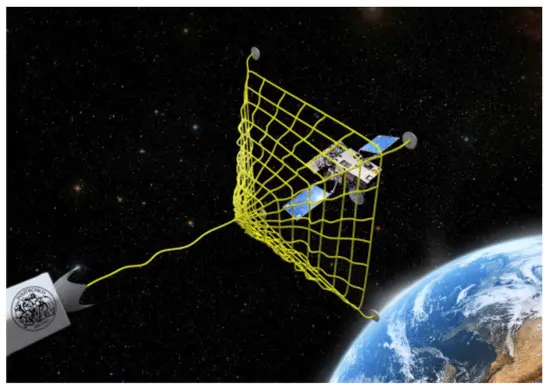

S paceX CEO Elon Musk's vision of transforming the night sky into a gigantic, solar-powered brain for artificial intelligence took a step closer to reality this week, as federal authorities began considering a plan to launch the company's new satellite constellation. On Wednesday, the Federal Communications Commission opened a public review of SpaceX's proposal to build a non-geostationary satellite system that would move energy-intensive AI computing into orbit, potentially allowing the company to deploy up to one million data-center-style satellites to train xAI models like Grok.
"The proposed satellites will use high-bandwidth optical inter-satellite links and conduct telemetry, tracking, and command (TT&C) operations," according to the Federal Communications Commission (FCC). "The Bureau seeks comment on the application and the associated requests for waiver." According to the concept, SpaceX would operate the satellite system at altitudes ranging from 310 to 1,240 miles, linked via laser-based optical communications.
The network would connect to SpaceX's current Starlink constellations, which would let data be sent to ground stations after it has been routed and processed in space. The FCC's decision opens a formal public comment period and regulatory review window that will last until March 6. This gives researchers, environmental groups, and business competitors a chance to share their thoughts on the plan. The FCC has backed SpaceX's satellite networks in the past, but just because they accepted the application for the orbiting data center doesn't mean it will be approved.
Why This News Matters:
This is a huge change from a science fiction idea to a real rule. The Federal Communications Commission says that SpaceX's plan to place AI data centers in orbit is significant enough to examine into by letting the public see it. If the idea is approved, it could change how AI gets its power and grows by moving computers that use a lot of electricity from one place to another. It also shows how closely connected Elon Musk's businesses are. SpaceX and xAI are now working together to fix one of AI's biggest problems: space, power, and cooling.
SpaceX–xAI Merger and Strategic Direction
The filing review follows Musk's decision on Monday to merge his artificial intelligence startup, xAI, with SpaceX, combining AI development and launch capabilities into a single entity. Musk merged SpaceX and his AI business on Monday to fund the effort, and the new company intends a large initial public offering.
Elon Musk believes that moving AI data centers into space is the best way to overcome the challenges of developing them on Earth. This week, he merged his rocket firm SpaceX with his artificial intelligence startup xAI, which could help them get there. "Transporting resource-intensive efforts to a location with sufficient power and space is the only logical solution." "I mean, space is called 'space' for a reason," Musk wrote on Monday in an announcement of the merger.
Vision for Space-Based AI and Energy Use
"The SpaceX Orbital Data Center system will allow SpaceX to begin delivering much-needed energy-efficient AI compute for consumers, enterprises, and government users around the world," SpaceX stated in a waiver request for the application. AI data centers are soon becoming one of the most significant new sources of electricity demand as AI systems scale. In 2024, the United States utilized approximately 183 terawatt hours of power, which is roughly similar to Pakistan's annual energy usage.
In its proposal, SpaceX portrayed the endeavor as a step toward creating a "Kardashev II-level civilization," a notional measure of a society capable of harnessing its star's whole energy output. "Global electricity demand for AI simply cannot be met with terrestrial solutions, even in the near term, without imposing hardship on communities and the environment," Musk stated in an email. "Space-based AI is obviously the only way to scale," Musk said on SpaceX's website Monday, adding to his solar goals, "It's always sunny in space!" The non-geostationary orbit system would also be a departure from the company's consumer-focused Starlink internet service, with satellites serving as space-based computing infrastructure built to run outside the power and cooling limits of AI research on Earth.
The company claims that operating in low Earth orbit will allow it to rely on near-constant solar power while lowering reliance on water- and energy-intensive cooling systems, which have come under growing criticism from authorities and local communities.
Technical Challenges of Space-Based Data Centers
However, academics and industry experts say even Musk faces significant technical, financial, and environmental challenges. Data centers create large amounts of heat. Space appears to provide a solution since it is chilly. However, it is also a vacuum, trapping heat inside objects in the same manner that a Thermos keeps coffee hot by utilizing double walls with no air between them.
"An uncooled computer chip in space would overheat and melt much faster than one on Earth," explained Josep Jornet, a computer and electrical engineering professor at Northeastern University. One solution is to construct massive radiator panels that glow in infrared light to push heat "out into the dark void," says Jornet, noting that the technique has worked on a modest scale, including on the International Space Station. Musk, on the other hand, claims that his data centers will necessitate the construction of "massive, fragile structures that have never been built before."
Space Debris, Maintenance, and Hardware Risks
Then there's space trash. A single faulty satellite breaking down or losing orbit might cause a chain reaction of collisions, potentially affecting emergency communications, weather forecasts, and other services. Musk stated in a recent regulatory filing that he had only experienced one "low-velocity debris generating event" in seven years of operating Starlink.

"We could reach a tipping point where the risk of collision is too great," said University of Buffalo's John Crassidis. Even without a collision, satellites fail, chips decay, and parts break. AI firms employ specialized GPU graphics chips, which might become damaged and need replacement.
However, no such maintenance team exists in orbit, and GPUs in space may be destroyed as a result of exposure to high-energy particles from the sun. One solution is to overprovision the satellite with extra chips to replace those that fail, but this is an expensive prospect considering current satellite lifespans of roughly five years.
Competition and Industry-Wide Interest
Musk is not the only one working to solve these difficulties. Starcloud, a firm in Redmond, Washington, launched a satellite in November with a single Nvidia-made AI computer processor to see how it would perform in orbit. Google is looking into orbiting data centers through a project called Project Suncatcher. In January, Jeff Bezos' Blue Origin revealed plans to launch a constellation of over 5,000 satellites beginning late next year.
Last summer, OpenAI CEO Sam Altman contemplated buying rocket startup Stoke Space to put data centers into orbit. In November, Google revealed intentions to test orbital AI data centers by launching two test satellites as early as next year.
Still, Musk has an advantage: he has rockets. Starcloud had to utilize one of his Falcon rockets to launch its chip into space last year. Aetherflux intends to launch a bundle of chips called a Galactic Brain into space on a SpaceX rocket later this year. According to Pierre Lionnet, Musk consistently charges rivals significantly more than he does himself, up to $20,000 per kg of payload vs $2,000 internally. He believes Musk's announcements indicate that he intends to leverage that advantage to win the new space race.
Earth-Based Constraints and Economic Pressures
Because AI data centers use a lot of power and water, expanding AI technology will necessitate alternate solutions. A large data center may consume up to 5 million gallons of water each day. According to a Bloomberg News research, electricity bills in neighborhoods surrounding data centers increased by up to 267% over the previous five years. "The Earth may be becoming a complicated place for Big Tech's data center development," Mark Muro, the CEO, stated.
Musk claimed that orbital data centers would be more cost effective than earth-bound ones "within two to three years." According to Deutsche Bank, it will be well into the 2030s before orbital data centers "reach close to parity." "Two or three years may be a stretch," David Bader explained. "But I would believe in three to five years, it would more comfortably be a regular deployment."